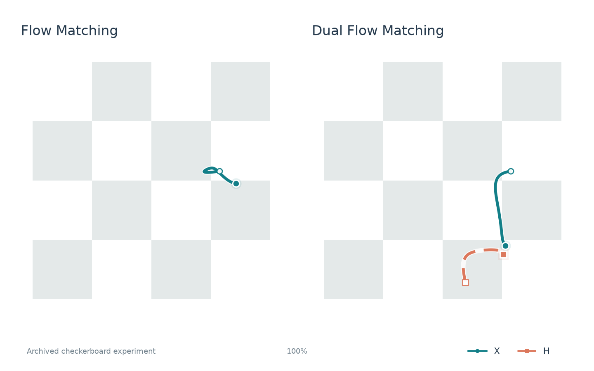

Dual Flow Matching
Learning Coupled Flows from Paired Views of a Shared Target
* Equal contribution
Submitted to ICLR 2027
One target. Two coupled flows.
Two noisy views of one target, evolved together by a shared network.
Flow Matching
Dual Flow Matching


Abstract
Standard flow matching predicts velocity from a single noisy state, leaving the relationship between paths toward the same data target implicit. We introduce Dual Flow Matching (DualFM), which couples two independently corrupted views of a shared target within one backbone. The network observes both states and predicts both velocities in a single evaluation. Independent training clocks vary the information available in each view, while synchronized sampling evolves the two states jointly. Training remains simulation-free and requires no pretrained teacher. We prove that auxiliary conditioning weakly reduces irreducible regression risk and derive an exact common-task identity for comparing field-approximation errors. Our evaluation spans MNIST, CIFAR-10, ImageNet32, and ImageNet64, including class-conditional generation with SiT-XL/4 at the larger resolution. Our experiments show improved multi-step generation over I-CFM, with approximately 0.1% additional parameters and nearly unchanged large-batch sampling latency. Matched controls show gains beyond model capacity and observation information, while diagnostics show more accurate target estimates and learned use of instance-level correspondence. The gains also extend to minibatch optimal transport coupling. These results establish shared-target joint prediction as an effective way to improve flow matching while keeping the backbone size nearly unchanged.